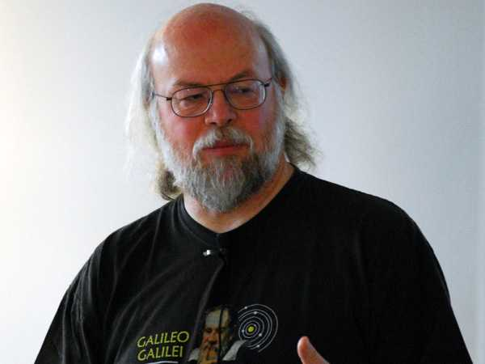

<div class="profile"><div>
  <div class="source">
Java (1995)
  </div>
  <div class="detail">
    
    <div class="search"><a href="http://www.google.com/cse?cx=partner-pub-6997921015773263:4467526896&ie=UTF-8&q=James Gosling" target="_blank"></a> | <a href="http://en.wikipedia.org/wiki/James_Gosling" target="_blank">wiki</a></div>
    <div class="name">James Gosling</div>
    <div class="info"><b>James A. Gosling</b>, OC (born May 19, 1955 near Calgary, Alberta, Canada) is a software developer, best known as the father of the Java programming language.
    <p><b><a href="http://en.wikipedia.org/wiki/Java_(programming_language)" target="_blank">Java</a></b> is a programming language originally developed by James Gosling at Sun Microsystems (which is now a subsidiary of Oracle Corporation) and released in 1995 as a core component of Sun Microsystems' Java platform. The language derives much of its syntax from C and C++ but has a simpler object model and fewer low-level facilities. Java applications are typically compiled to bytecode (class file) that can run on any Java Virtual Machine (JVM) regardless of computer architecture. Java is a general-purpose, concurrent, class-based, object-oriented language that is specifically designed to have as few implementation dependencies as possible. It is intended to let application developers "write once, run anywhere." </p>
    </div>
  </div>
  <div class="photo">
    
  </div>
</div></div>